Podrobný průvodce kalibracemi z Anycubic Slicer Next. Ukazuje, co každý test skutečně měří, jak připravit tisk, jak vybrat nejlepší vzorek a jak výsledek bezpečně uložit do profilu.
Pro úplné začátečníkyEN názvy z aplikace + český významKobra X · direct drive (přímý náhon)Obrázky uložené místně v pic/
Než začneš: co se vlastně kalibruje?
Kalibrace filamentu znamená hledat nastavení, při kterém se konkrétní filament dobře taví, správné množství plastu opouští trysku a tiskárna jej čitelně ukládá. Jedna cívka PLA se může chovat jinak než jiná cívka PLA; barvivo, značka, vlhkost, průměr trysky a rychlost tisku výsledek ovlivňují. Proto si poznač výrobce, materiál, barvu, případně šarži a kalibruj pro každou cívku/profil, u které se výsledek liší.
Ne všechny testy v menu mění profil filamentu. Temperature, Flow Ratio, Pressure advance, Retraction a Max volumetric speed obvykle ukládáš do profilu filamentu. Naproti tomu VFA, Input Shaping a Cornering řeší hlavně mechaniku/pohyb konkrétní tiskárny. Kostka a test vůlí jsou měřicí pomůcky. Když nastavíš tiskárnu chybně, nelze to spolehlivě napravit přidáním průtoku.
🔥
Důležité o Kobra X a firmwaru
Každou kalibraci spouštěj z aktivního profilu Anycubic Kobra X a správného procesu. Kobra X používá přímý náhon (DDE/direct drive), proto u PA a Retract nevybírej Bowden. Některé návody OrcaSlicer popisují hodnoty pro Klipper, Marlin nebo jiné tiskárny. Nezadávej příkazy firmwaru a nepřebírej jejich rychlosti naslepo: použij je jen tehdy, když přesně víš, jaký firmware a nastavení tvá Kobra X podporuje.
Společná příprava každého testu
Zapiš si výchozí nastavení. Než něco změníš, poznamenej původní teplotu, Flow Ratio, PA, retrakci a rychlost průtoku. V případě zhoršení se vrátíš zpět.
Použij suchý filament. Vlhkost dělá nitky, bublinky a drsný povrch a může způsobit falešný závěr, že je špatná teplota nebo retrakce.
Vyber správné profily. V horní části Anycubic Slicer Next zvol Kobra X, materiál, který skutečně tiskneš, a obvyklý Process (Proces). Zkontroluj průměr nasazené trysky.
Vytiskni vygenerovaný test beze změn. Calibration (Kalibrace) vytváří samostatný projekt, který obsahuje měnící se zkušební hodnoty. Slicuj jej a vytiskni jako celek; nepřepisuj běžné nastavení uprostřed testu.
Měň vždy jednu věc. Po každé kalibraci ulož hodnotu do odpovídajícího profilu a udělej kontrolní běžný tisk. Když je horší, vrať poslední změnu, ne všechno najednou.
💡
Jednoduché pravidlo pro čtení vzorku
Nehledej „nejhezčí na první pohled“ jen na jednom místě. Porovnej stejnou plochu každého vzorku, stejné rohy nebo stejné patro. U flow sleduj horní plochu a mezery; u PA rohy a začátky/konce čar; u teplotní věže pevnost, nitky a převisy. Když jsou dvě hodnoty podobně dobré, zvol bezpečnější prostřední hodnotu a ověř ji běžným dílem.
Jak testy řadit, aby si navzájem nepřekážely
Není třeba tisknout úplně všechno. Začni testy, které ovlivňují množství a tavitelnost plastu, potom dolaď změny tlaku při pohybu a nakonec rychlostní limit. Kostku a test vůlí vytiskni, když potřebuješ ověřit rozměry; pohybové kalibrace nech až na chvíli, kdy se chceš zabývat rychlostí nebo vlnami na stěnách.
1 teplota→2a flow YOLO→3a PA Line→4 retrakce→5 max flow→běžný kontrolní tisk
Co na běžném tisku pozoruješ?
Kam se vrátit
Proč právě tam
Mezery nebo naopak vystouplé hřebeny na horní ploše
#2a Flow Ratio YOLO
Nejdřív uprav poměr vytlačovaného materiálu.
Boule/mezera jen při rozjezdu a v rohu
#3 Pressure advance
PA upravuje tlak při změně rychlosti, ne stálý objem vytlačování.
Nitky mezi oddělenými částmi
#1 teplota → #4 Retract; zkontroluj vlhkost
Horký nebo vlhký materiál teče a nitkuje; retrakce řeší zatažení při přejezdu.
Vady začnou až u rychlejších/vyšších pater
#5 Max flowrate
Tavicí soustava nemusí stíhat dodat plast při vysokém objemovém průtoku.
Pravidelné vlnky na stěně po změně směru
IV Cornering / II Input Shaping / #7 VFA
Jde pravděpodobně o pohyb, vibrace nebo rezonanci tiskárny.
Díly do sebe nezapadají
#6 kostka a #8 tolerance
Zkontroluj rozměr a skutečnou vůli před úpravou kompenzací.
Kalibrace filamentu – jednotlivé body
📖
Checklist k těmto kapitolám (tisk 2× A4):Checklist_kalibrace_filamentu Čísla a názvy karet v checklistu odpovídají testům 1 až 8 níže.
1 Temperature (Teplota) · teplotní věž
Teplota určuje, jak snadno plast protéká tryskou a jak dobře se spojují vrstvy. Cílem je najít kompromis mezi hladkým povrchem, pevnými vrstvami, čistými převisy a minimem nití.
Cesta v aplikaci: Calibration (Kalibrace) → Temperature (Teplota). Vyber správný filament a běžný proces ještě před spuštěním.
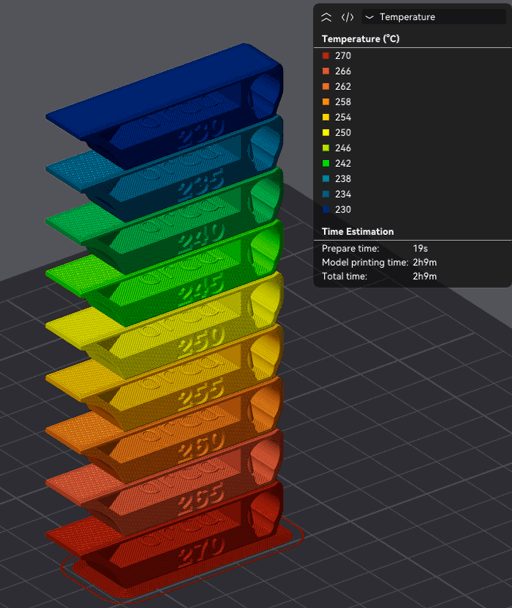
OrcaSlicer Wiki: každé patro věže se tiskne při jiné teplotě. Přesné teploty čti podle generovaného projektu, ne odhadem podle pořadí pater. Otevřít dokumentaci Temperature Calibration.
Jak zvolit Start, End a Step
Na cívce nebo v technickém listu hledej doporučený rozsah teplot trysky. Jestli výrobce například uvádí PLA 190–220 °C, můžeš pro první zkoušku zadat Start 190, End 220 a Step 5 °C. Je to jen příklad výpočtu, nikoliv univerzální nastavení všech PLA. Pokud výrobce píše užší rozsah, použij jeho údaje; nezkoušej teplotu mimo bezpečné rozmezí.
Start (Začátek) je nejnižší teplota věže; End (Konec) nejvyšší.
Step (Krok) udává rozdíl mezi úseky. Menší krok porovnává přesněji, ale vytváří více pater. Krok 5 °C je rozumný první výběr při rozsahu kolem třiceti stupňů.
Auto-scale for nozzle (Automatické měřítko pro trysku) je ve výchozím stavu zapnuté. Referenční věž je navržená pro 0,4mm trysku a vrstvu 0,2 mm; zapnuté měřítko mění velikost modelu podle průměru trysky a nastaví výšku vrstvy na polovinu průměru, aby detaily zůstaly čitelné. Vypínej ho jen tehdy, když chceš původní rozměr modelu a víš proč.
Jak věž posoudit
🔥
Příliš nízká teplota může vypadat takto Matný, drsný nebo přerušovaný povrch, slabší spojení vrstev, podextruze, křehké stěny. Nitky se také mohou objevit, protože studenější plast protéká nepravidelně.
🔥
Příliš vysoká teplota může vypadat takto Více nití, lesklý rozteklý povrch, měkké převisy, slité detaily; při přehřátí se může materiál zhoršovat nebo ucpat trysku.
Prohlédni všechna patra při stejném světle. U každého porovnej stěny, převisy/mosty a prostor mezi sloupky.
Pokud několik sousedních pater vypadá dobře, zvol jejich prostředek. Jestli budeš tisknout vyšší rychlostí nebo větším průtokem, zvaž hornější část dobrého rozsahu; teplejší plast se často snáze taví a spojuje.
Nezaměňuj teplotu běžných vrstev za teplotu první vrstvy. Do profilu zapiš zvlášť hodnotu pro běžné vrstvy a případně upravenou první vrstvu.
Ulož změnu do Filament settings (Nastavení filamentu) → nozzle temperature (teplota trysky) a vytiskni malý běžný díl.
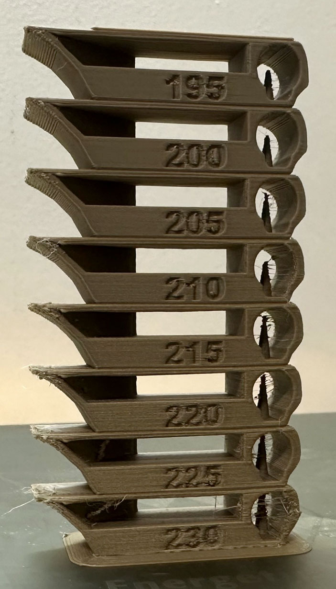
Při volbě nehledej jediné „dokonalé“ patro na jednu vadu. Vyber teplotu, která nejlépe vyvažuje pevnost vrstev, převisy, povrch a nitkování.
💡
Když nevíš, co zvolit: spolehlivý první výsledek z cívky bývá lepší výchozí bod než internetová teplota cizího filamentu. Značka, barva i rychlost mění výsledek.
Test upravuje Flow Ratio (Poměr průtoku): číslo, kterým slicer násobí vypočítané množství plastu. Měří se horní povrch vzorků, ne průměr filamentu posuvným měřítkem.
Cesta: Calibration (Kalibrace) → Flow rate (Průtok) → YOLO (Recommended) (Doporučeno). Tato metoda používá vzor Archimedean chords (Archimédovy oblouky) a jediný průchod.
Doporučené výchozí hodnoty OrcaSliceru jsou −0,05 až +0,05 po 0,01 Flow Ratio. Vznikne 11 dílků. Slicer vytvoří nový projekt s jedenácti vzorky/bloky, každý má jiný modifier; slicuj a vytiskni celý připravený projekt. Test vychází z právě vybraného Flow Ratio, takže nejprve vyber správný filament.
Jak číst povrch
Postav dílky vedle sebe a hledej nejhladší, rovnoměrný vršek.
Zkontroluj, zda mezi oblouky nejsou viditelné mezery. Mezery značí, že plastu může být málo.
Podívej se na kontaktní čáru mezi vnitřní spirálou a vnějšími oblouky. OrcaSlicer upozorňuje, že v ukázce může být jemná čára i na nejlepším vzorku; přílišné snižování průtoku už vytvoří mezery.
Vzorec Nový Flow Ratio = dosavadní Flow Ratio + modifier Příklad z wiki Dosavadní Flow Ratio 0,98; nejlepší vzorek +0,01 0,98 + 0,01 = 0,99
Dosavadní hodnotou je číslo, které je právě uložené v profilu filamentu před přepsáním. Zapiš výsledek do Filament settings (Nastavení filamentu) → Flow Ratio (Poměr průtoku), ulož profil a nový projekt slicuj znovu.
🔥
Neber pruh jako jediný rozsudek. Pokud všechny dílky vypadají stejně, ověř suchý filament, čistou trysku a stejný profil/process. Tenká čára sama o sobě nemusí znamenat špatné nastavení.
Jemnější YOLO použij, jen když test 2a ukázal několik téměř stejně dobrých vzorků a chceš mezi nimi rozlišit. Není potřeba dělat ho automaticky po každém průtoku.
Výchozí doporučená sada OrcaSliceru je −0,04 až +0,035 po 0,005. Oproti kroku 0,01 jsou vzorky blíž u sebe, takže jejich rozdíl bývá méně zřejmý. Podívej se na výsledek při dobrém světle a porovnávej stejné místo.
Nejprve ulož vítěznou hodnotu z 2a do profilu filamentu.
Spusť YOLO (perfectionist version) se stejným filamentem a procesem.
Vyber nejhladší vzorek bez mezer; zapiš i znaménko dílku.
Přičti modifier k hodnotě, kterou jsi uložil po 2a.
Vzorec: nový Flow Ratio = hodnota uložená po 2a + jemný modifier Příklad: 0,99 + 0,005 = 0,995 Ulož 0,995 do profilu filamentu a ověř běžným tiskem.
Pokud povrch po jemném kroku začne mít mezery, vrať se na předchozí hodnotu nebo o jeden dílek směrem k vyššímu průtoku. Číslo není obecný „kalibrační faktor“; platí pro konkrétní filament a profil.
Pass 1/2 je druhý způsob kalibrace Flow Ratio založený na vzoru Monotonic Line (Monotónní čáry). Je alternativou k YOLO, nikoli povinným pokračováním. Každý dílek v těchto testech má procentní modifier, proto se výsledek počítá jinak než u YOLO.
Pass 1 (Průchod 1)
Vyber Pass 1 v Calibration → Flow rate. Projekt obsahuje devět vzorků. Porovnej jejich hladký horní povrch, vyber nejlepší modifier a vypočítej novou hodnotu. Potom ji ulož do profilu dřív, než spustíš Pass 2.
Nový Flow Ratio = dosavadní Flow Ratio × (100 + modifier v %) ÷ 100 Příklad: starý 0,98 a dílek +5 0,98 × (100 + 5) ÷ 100 = 1,029
Modifier +5 znamená zvýšit dosavadní hodnotu o pět procent. Neznamená přičíst číslo 5 k hodnotě Flow Ratio.
Pass 2 (Průchod 2)
Teprve po uložení Pass 1 otevři Pass 2. Vytvoří deset vzorků s modifiery od −9 do 0. Vyber nejlepší dílek a pro výpočet jako „dosavadní“ použij právě hodnotu uloženou po Pass 1.
Příklad Pass 2: po Pass 1 je Flow Ratio 1,029; vybereš dílek −6 1,029 × (100 − 6) ÷ 100 = 0,96726
Zapiš vstupní hodnotu z aktivního profilu a modifier vybraného vzorku.
Vypočti výsledek podle procentního vzorce; zachovej znaménko.
Po Pass 1 výsledek ulož. Pass 2 nesmí začínat starou hodnotou 0,98, pokud už jsi do profilu uložil novou.
Po Pass 2 ulož finální hodnotu a znovu slicuj běžný projekt.
💡
Jak nepomíchat vzorce
YOLO: dosavadní Flow Ratio + modifier (například 0,98 + 0,01). Pass 1/2: dosavadní Flow Ratio × procentní násobek (například 0,98 × 1,05). Zkontroluj název zvolené metody.
3a Pressure advance (Předstih tlaku) · PA Line (Čárový test)
Pressure Advance (PA; předstih tlaku) kompenzuje zpoždění tlaku v trysce při zrychlování a zpomalování tiskové hlavy. Když hlava zpomalí do rohu, plast se ještě chvíli tlačí ven; při rozjezdu se naopak tlak chvíli buduje.
Cesta: Calibration (Kalibrace) → Pressure advance (Předstih tlaku) → Extruder type (Typ extruderu) DDE → PA Line (Čárový test). Kobra X má přímý náhon, nikoli Bowden.
Proč začít linií
PA Line je rychlý a přímočarý. Na podložce vytiskne několik čar s různými hodnotami PA. Jeho přesnost ale závisí na první vrstvě: pokud je jedna část čáry přimáčknutá více než jiná, zdánlivá změna šířky může být nerovnou podložkou, ne PA. OrcaSlicer doporučuje pro tento test zapnout bed mesh leveling (vyrovnání/mesh podložky), pokud ho tiskárna a profil podporují.
V okně PA zvol DDE. Rozsah a krok pro první pokus ponech na hodnotách, které nabídne slicer.
Slice a vytiskni test. Nehodnoť čáru, která se odlepila, má díru v první vrstvě nebo je nerovnoměrně přimáčknutá.
Hledej linii se stejnou šířkou od začátku do konce. Příliš nízká kompenzace může nechat nahrnutý plast u konce/rohu; příliš vysoká může linku ztenčit nebo přerušit.
Odečti PA přiřazené nejrovnoměrnější čáře a zapiš ho do Filament settings → Pressure advance (Předstih tlaku).
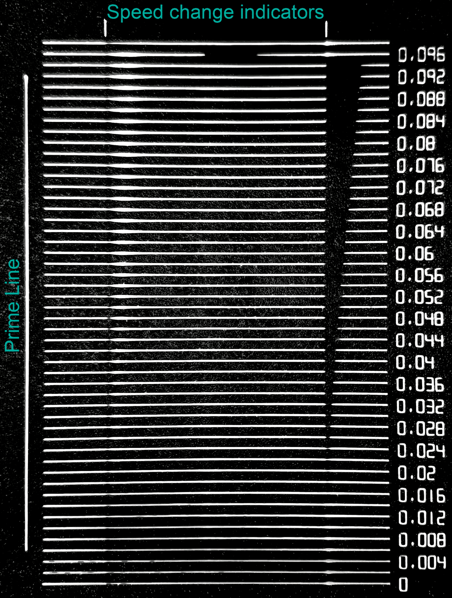
Ukázka PA Line: porovnej stejnorodost čar. Čára, která je celá rovnoměrná, ukazuje na nejvhodnější hodnotu PA. Pressure Advance · OrcaSlicer Wiki.
🔥
Výsledek PA není teplota ani průtok. Není to číslo, které se má automaticky vynásobit nebo přenést na jinou tiskárnu. Ukázková hodnota 0,016 v dokumentaci je jen příklad čtení testu, ne předpis pro Kobra X.
3b Pressure advance (Předstih tlaku) · PA Tower (Věž)
PA Tower zabere více času než Line, ale vyhodnocení není tolik závislé na perfektní první vrstvě. Věž mění hodnotu PA postupně s výškou; každý milimetr odpovídá jednomu kroku PA na mm podle nastavení testu. Věž se přizpůsobí zvolenému rozsahu: horní část nepřekročí zadaný End.
Cesta: Calibration → Pressure advance → Extruder type: DDE → PA Tower (Věž). Nezaměňuj direct-drive variantu s Bowden.
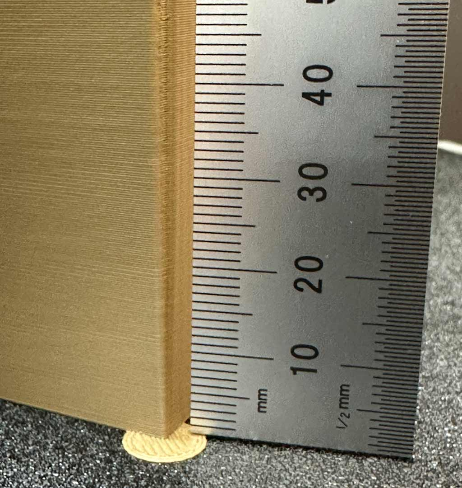
Vyber nejlepší výšku a odečti hodnotu podle výšky v náhledu/g-code. Wiki ukazuje, že výška 8 mm při Start 0 a kroku 0,002/mm odpovídá PA 0,016. Pressure Advance · OrcaSlicer Wiki.
Co sledovat na jednotlivých patrech
Prohlédni rohy i švy. Při malé PA může být na vnější straně rohu boule, plast se může nahrnout a přechod po rohu je nečistý. Při příliš velké PA se na rohu objevuje zeslabení či mezera, protože extruder tlak snížil až příliš. Hledej část, kde roh zůstává ostrý, ale linka po něm je pořád souvislá.
Vytiskni věž a vyber nejlepší patro podle rohů a návaznosti čar.
Výšku měř od spodního začátku stupňů, ne od horní hrany podložky modelu. Použij Preview (Náhled) a posuvník vrstev, aby ses trefil ke správnému úseku.
Vypočti PA podle vzorce. Ulož hodnotu do profilu filamentu a ověř běžným dílem.
Pokud se nejlepší patro nachází těsně na samém horním či spodním konci věže, rozsah nemusel pokrýt správnou hodnotu. Zopakuj věž s rozsahem přesunutým k nalezené oblasti; nevybírej hodnotu mimo to, co test skutečně vytiskl.
3c Pressure advance (Předstih tlaku) · PA Pattern (Vzorek)
PA Pattern je plošný vzor pro přímé porovnání tlakové kompenzace v rozích. OrcaSlicer umožňuje vytvořit jeden nebo více testů; při více testech přidá podle potřeby další desku. Každý vzorek je doplněn malým obdélníkovým hranolem, který je nosičem vrstev a zároveň úchopem pro přemístění vzorku.
Cesta: Calibration → Pressure advance → DDE → PA Pattern (Vzorek). Podle verze aplikace uvidíš jednotlivé testy nebo dávkové zadání rychlostí/zrychlení.
Jak číst pattern
Porovnej rohy a čáry ve všech oblastech. Nízké PA vytváří výduť u rohu; příliš vysoké PA může způsobit rozestup nebo nedostatek plastu za rohem.
Testovací čísla/parametry bývají uvedené na objektu nebo v seznamu objektů. Preview (Náhled) ukazuje i vložený vlastní G-code vzoru.
Vzorek používá nastavení šířky Default (Výchozí) a First layer (První vrstva) a rychlosti First layer speed → First layer a Other layers speed → Outer wall. Pruhovaná „výplň“ vzoru je ručně zapsaný G-code, ne standardní infill (výplň), který by převzal vzor nastavený v běžném profilu.
U jednoho nejasného vzorku hoď raději druhý test s užším rozsahem. Nemusíš tisknout PA Line, Tower i Pattern všechny: jsou to alternativní způsoby měření téhož nastavení.
💡
Pro běžné použití Kobra X: začni 3a PA Line, pokud první vrstva drží rovnoměrně. Když je výsledek nejasný nebo první vrstva zkresluje čáry, vyzkoušej 3b PA Tower. Pattern je další možnost, když ti jeho rohy a popisky dávají lépe čitelný výsledek.
Retrakce na chvíli stáhne filament zpět, když tryska cestuje bez tisku. Správná délka pomáhá omezit nitky a odkapávání. Příliš velké zatažení může způsobit zpožděný tok po přejezdu nebo jiné vady, proto nehledáme co největší číslo, ale nejkratší hodnotu, která je ještě čistá.
Cesta: Calibration → Retraction test. Pro Kobra X použij přímý náhon (DDE/direct drive).
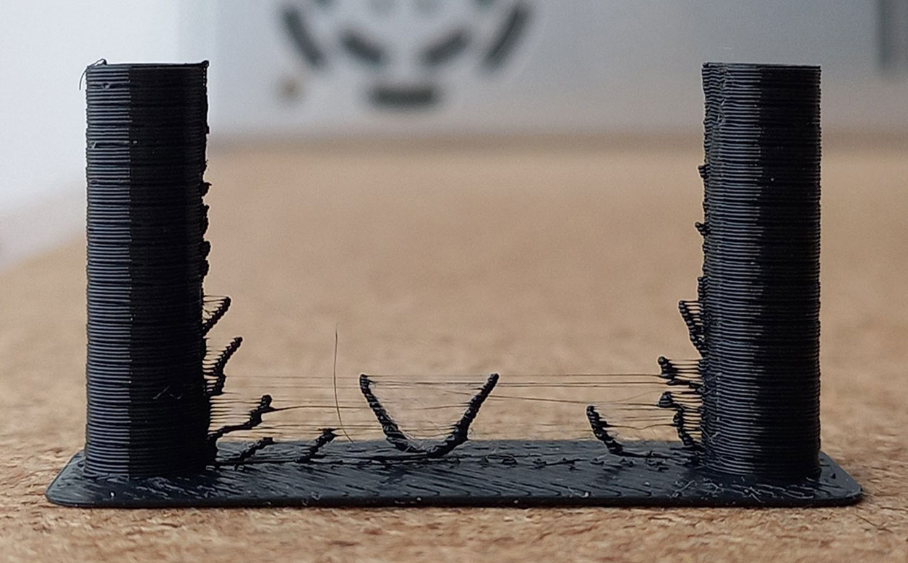
Každý zářez/výškový úsek retrakční věže odpovídá jiné délce zatažení. Nejčistší část je třeba spojit s hodnotou dané výšky v náhledu G-code. Retraction · OrcaSlicer Wiki.
Výchozí parametry podle OrcaSlicer Wiki
Typ extruderu
Start
End
Step
Použít na Kobra X?
Direct drive (Přímý náhon)
0 mm
2 mm
0,1 mm
Ano, doporučený začátek
Bowden (Bowdenova trubice)
1 mm
6 mm
0,2 mm
Ne; jde o rozsah pro jiný typ vedení filamentu
Zadej direct-drive rozsah Start 0 / End 2 / Step 0,1 mm, pokud už nemáš důvod použít vlastní úzký rozsah.
Po tisku prohlédni věž, hledej místo s nejmenším stringing (nitkováním) a oozing (samovolným vytékáním).
Změř výšku čistého úseku a v Preview/G-code vyhledej komentář Calib_Retraction_tower. Ten říká, jaká retraction length (délka retrakce) patří k této výšce.
Ulož nejkratší čistou hodnotu do Filament settings → Retraction length (Délka retrakce). Rychlost retrakce měň pouze samostatným testem, pokud jej tvůj slicer nabízí.
🔥
Nečti jen obecný příkaz ; retract. OrcaSlicer výslovně doporučuje hledat Calib_Retraction_tower, protože samotný příkaz ; retract nemusí obsahovat celou efektivní délku (například při Retract amount before wipe / zatažení před otřením).
Někdy je věž čistá už od začátku, zvlášť u PLA nebo ABS, kde je vytékání malé. Pak může stačit nízká délka kolem 0,2–0,4 mm jako zkušební výchozí hodnota; neznamená to, že pro každou Kobra X a filament musí platit přesně tato hodnota. Pokud horní část věže stále hodně nitkuje, nejdřív vysuš filament a zkontroluj, zda je tryska správně usazená a nikde neteče.
5 Max flowrate (Maximální průtok)
Tento test hledá, kolik plastu za sekundu dokáže konkrétní filament protlačit tryskou bez viditelného zhoršení kvality. Jde o Max Volumetric Speed (Maximální objemovou rychlost/průtok) v mm³/s. Není to rychlost hlavy v mm/s. Název v checklistu odpovídá nabídce Anycubic Slicer Next; dokumentace OrcaSlicer označuje test Max Volumetric Speed (FlowRate).
Cesta: Calibration (Kalibrace) → Max flowrate (Maximální průtok). Dialog žádá Start volumetric speed (Počáteční objemový průtok), End volumetric speed (Koncový objemový průtok) a Step (Krok).
💡
Doporučený bezpečný první rozsah z OrcaSlicer Wiki: Start 5 mm³/s, End 20 mm³/s, Step 0,5 mm³/s. Wiki doporučuje tyto výchozí hodnoty, pokud už neznáš nižší nebo horní limit filamentu. Není vhodné začít 5–50: OrcaSlicer už pokládá End 20 za výchozí horní hranici testu a vyšší rozsah může zbytečně tisknout dlouho, plýtvat filamentem a zkoušet daleko nad dosavadním limitem.
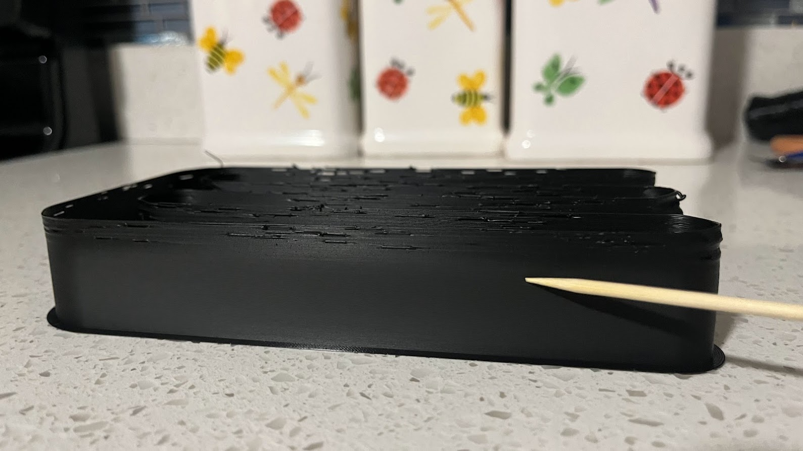
Najdi patro těsně před tím, než se kvalita začne zhoršovat. Matnější/lesklejší změna povrchu může být známkou zhoršeného toku nebo spojení vrstev. Max Volumetric Speed · OrcaSlicer Wiki.
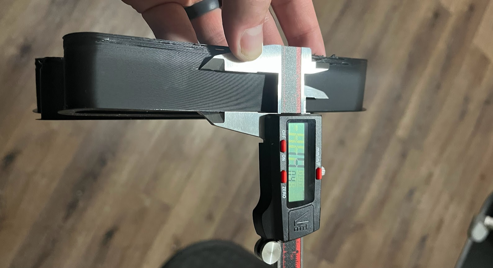
Výšku před začátkem vady změř pravítkem nebo posuvným měřítkem. Neodečítej ji podle odhadované rychlosti hlavy.
Co je „vada“ v tomto testu?
Sleduj okamžik, kdy vrstvy začnou být méně kvalitní: povrch se změní z lesklého na matný nebo naopak, přijdou mezery, drsná linka, zeslabení stěny či slabé spojení vrstev. OrcaSlicer varuje, že vysoký průtok může zhoršit pevnost spojení vrstev nebo ucpat trysku. Je to zkušební „nejlepší možný“ limit a nemusí zahrnovat jiné situace, které zvyšují riziko ucpání nebo podextruze, třeba retrakce.
Výpočet podle výšky
Změř výšku modelu těsně před první vadou. Vzorec níže používá Start z dialogu a počet milimetrů naměřené výšky krát Step. V příkladu OrcaSliceru je výška 19 mm:
Max Volumetric Speed = Start + (změřená výška × Step) 5 + (19 × 0,5) = 14,5 mm³/s
V nastavení materiálu lze zadat naměřených 14,5. Pro běžnou spolehlivost ale jako výchozí rezervu použij 10 %, při horší kvalitě povrchu 10–20 % (případně více, pokud není dobrá pevnost). Při 10% rezervě:
OrcaSlicer dovoluje i jiný způsob: v Preview zvol barevné schéma Flow (Průtok), posuň svislý náhled vrstev k výšce, kterou jsi změřil, a klikni na posuvník hlavy nástroje. Aplikace ukáže maximální průtok pro danou vrstvu. Tento způsob může ušetřit ruční výpočet, ale přesto si výsledek poznamenej a použij rezervu 10 % (při horším povrchu 10–20 %).
Začni Start 5 / End 20 / Step 0,5 mm³/s, pokud neznáš nižší limit filamentu.
Vytiskni a najdi poslední čistou výšku před zhoršením.
Výsledek odečti vzorcem nebo přes Preview → Flow.
Ulož bezpečnější Max volumetric speed (Maximální objemový průtok) do profilu filamentu.
U rychlejšího tisku může být třeba zvýšit nozzle temperature (teplotu trysky), ideálně jen směrem k hornímu okraji výrobcem uvedeného rozsahu. Nejprve ji ověř teplotní věží; vyšší průtok může zhoršit spojení vrstev.
📖
Rychlý tisk: když běžně tiskneš rychle, rozsah 5–20 mm³/s nemusí stačit (např. 300 mm/s ≈ 25 mm³/s, přepočet je v kapitole 10). Je-li celá věž čistá, limit změřen nebyl: zopakuj test s End asi o 30 % nad odhadem průtoku a Step 0,5–1.
📖
Každá cívka může mít jiné maximum. Záleží na konkrétním materiálu, tiskárně, průměru trysky, extruderu, výrobci i barvě PLA. Výsledek pro jeden filament automaticky nepřenášej na jiný.
6 XYZ Cube (Kostka XYZ) · kontrola rozměrů
Kostka není „kalibrace průtoku“. Je to jednoduchý kontrolní model se známými rozměry v osách X, Y a Z. Ukáže, zda se vytištěné rozměry zhruba shodují s modelem; výsledek však mohou ovlivnit měření, smrštění materiálu, první vrstva, mechanika, model i kompenzace sliceru.
Vložení do projektu: pravým tlačítkem na pracovní plochu → Add Handy models (Přidat praktické modely) → XYZ Cube (Kostka XYZ). Kostka tedy v programu je, jen není v menu Calibration.
Vytiskni kostku v běžném profilu, bez podpěr a bez mimořádných kompenzací.
Nech ji vychladnout. Posuvným měřítkem změř odpovídající rovné plochy X, Y, Z. Neměř hranu s brimem, sloní nohou nebo nahrnutým švem.
Porovnej nominální rozměr modelu s měřením. Zaznamenej rozdíl se znaménkem: naměřeno minus model.
Pokud jsou odchylky velké, nejprve ověř správný model, jednotky a měřidlo, první vrstvu, napnutí řemenů, vůle a přímou geometrii. Neprováděj náhodnou změnu steps/mm.
Odchylka = naměřený rozměr − rozměr v modelu Příklad: model 20,0 mm; naměřeno 19,9 mm → rozdíl −0,1 mm.
🔥
Nepoužívej kostku k automatickému přepočtu steps/mm. U běžné 3D tiskárny se špatné vnější rozměry často řeší jinými příčinami než kalibrací kroků motoru. Steps/mm měň jen podle postupu výrobce/firmwaru a po diagnostice, ne podle jednoho plastového modelu.
7 VFA (Vertical Fine Artifacts; Jemné svislé artefakty)
VFA jsou jemné opakující se stopy na svislých stěnách, zvlášť poblíž ostrých rohů a změn směru. Mohou souviset s vibracemi, rezonancí krokových motorů, řemeny, kladkami, změnou směru nebo nastavením pohybu. MRR (Motor Resonance Rippling; vlnění rezonancí motoru) je jeden z typů VFA. VFA není druhý test průtoku filamentu.
Cesta: Calibration → VFA. Test vytvoří vysokou věž s různými úhly stěn a postupně se zvyšující rychlostí.
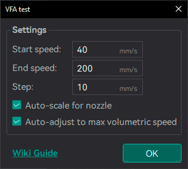
Nastavení VFA tower. Zadej rychlostní rozsah pokrývající rychlosti vnějších stěn, které opravdu používáš. VFA · OrcaSlicer Wiki.
Jak zvolit rozsah bez slepého honění rychlosti
OrcaSlicer uvádí jako příklad rychlost vnější stěny 20–200 mm/s a přírůstek 10 mm/s. To je příklad z wiki, ne automatický bezpečný rozsah Kobra X. Nastav rozsah podle své tiskárny a běžného profilu Outer wall (Vnější stěna); drž se rychlostí, které Kobra X, proces a filament skutečně zvládnou. Nižší Step ukáže užší rychlostní pásmo, ale vytvoří více úseků a prodlouží test.
Auto-scale for nozzle (Automatické měřítko pro trysku) je standardně zapnuté; reference počítá s 0,4mm tryskou/0,2mm vrstvou. Při zapnutí nastaví šířku modelu podle trysky a výšku vrstvy na polovinu průměru, takže každý rychlostní blok má 25 vrstev a změny se srovnávají s viditelnými hranami.
Auto-adjust to max volumetric speed (Automaticky upravit podle maximálního průtoku) je dostupné jen při zapnutém Auto-scale. Když by požadovaná rychlost překročila Max Volumetric Speed z profilu, slicer může snížit výšku vrstvy v běžných krocích; pokud to nestačí ani při nejnižší vrstvě, sníží koncovou rychlost a požádá o potvrzení.
Pokud oba přepínače vypneš, věž zachová původní proporce 0,4mm modelu a limit průtoku filamentu může zastavit test dřív, než dosáhne End speed. Pak můžeš možnosti znovu zapnout, použít filament s vyšším limitem, nebo test připravit s nižší koncovou rychlostí.
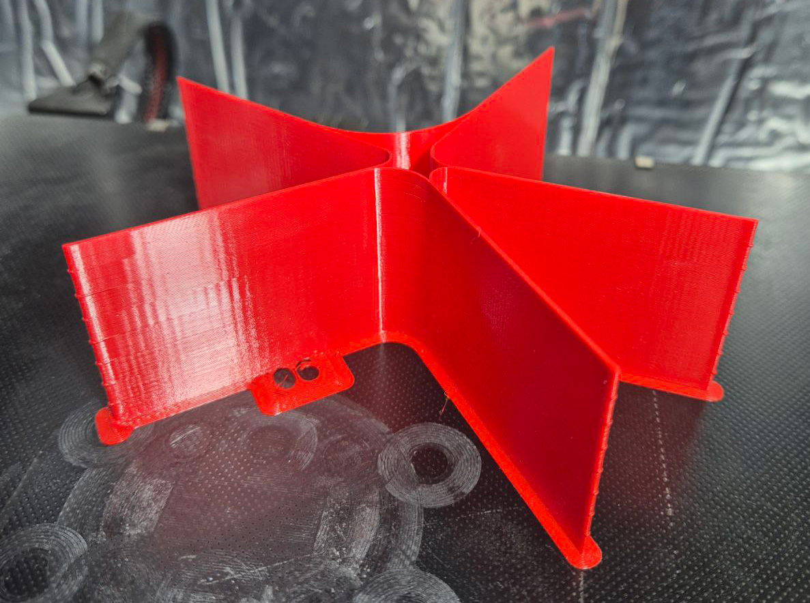
Vytištěná věž vytváří stěny v různých úhlech. Prohlížej opakované svislé stopy pod stejným světlem, ideálně zešikma.
Vytiskni věž. Najdi rychlostní pásma, kde se stěna výrazně zhorší nebo zlepší.
Do Printer settings (Nastavení tiskárny) → Resonance avoidance speed range (Rozsah rychlostí vyhýbajících se rezonanci) zapiš problematické pásmo, pokud danou volbu profil podporuje. Cílem bývá vyhnout se rezonančním rychlostem, ne měnit Flow Ratio.
Pokud chceš řešit fyzický původ artefaktu, prohlédni také řemeny, kladky, motory a pevnost rámu; změna rychlostního pásma neodstraní mechanickou vůli.
🔥
Omezení verze: automaticky nozlu přizpůsobená věž a automatické omezení objemovým průtokem jsou podle wiki dostupné v nightly nebo vydáních novějších než 2.4.2. Pokud Anycubic Slicer Next příslušné volby nemá, řiď se reálným dialogem své verze.
8 Orca Tolerance Test (Test vůlí) · volitelně
Každá kombinace tiskárny, filamentu a profilu může dávat trochu jiné rozměrové vůle. OrcaSlicer testuje, jak těsně mohou do sebe zapadat vytištěné tvary. Není to základní nastavení průtoku, ale pomáhá při modelování dílů, které mají zapadnout nebo se pohybovat.
Vložení do projektu: Prepare (Příprava) → pravé tlačítko na desce → Add Handy models (Přidat praktické modely) → Orca Tolerance Test (Test vůlí).
Model obsahuje šestihranné otvory s vůlemi 0 / 0,05 / 0,1 / 0,2 / 0,3 / 0,4 mm a šestihranný tester. Vůli lze zkusit přiloženým vytištěným testerem nebo 6mm imbusovým klíčem. Zkoušej díl bez násilí: když se síla zvýší, otvor ještě není volný.
Vytiskni základnu a zkušební díl se stejným filamentem a běžným procesem, se kterým budeš navrhovat funkční součásti.
Zkoušej otvory postupně od nejmenší vůle. Zapiš nejmenší otvor, kam tester hladce vstoupí nebo se pohybuje.
Pokud otvory vycházejí příliš těsné, lze po ověření rozměrů ladit X-Y hole compensation (Kompenzace otvorů X-Y). Pokud vnější obrysy vycházejí moc malé/velké, samostatně prověř X-Y contour compensation (Kompenzace obrysu X-Y).
Kompenzace měň v malých krocích a po každé změně znovu vytiskni test. Do poznámek k profilu si zapiš filament, proces a zvolenou vůli.
🔥
Neměň obě kompenzace naráz. Kompenzace otvorů a obrysu ovlivňují jinou stranu rozměru. Nejdříve zjisti, zda je problém na vnitřním otvoru, vnějším dílu, nebo v obou.
10 Rychlost tisku a jeden profil filamentu
Pro každý filament (u každého výrobce zvlášť) stačí jeden profil filamentu, zkalibrovaný při rychlosti, kterou tiskneš nejčastěji. Rychlost se mění v Process (Proces) profilu nebo jen pro konkrétní tisk a slicer ji sám omezí podle limitu průtoku. Tato kapitola vysvětluje, co se s rychlostí mění, které drobné úpravy mají smysl jen pro jeden tisk a kdy si založit podprofil.
Proč stačí jeden profil
Rychlost uvedená na cívce (např. PLA+ HS 100–600 mm/s) je jen orientační. Skutečný strop určuje, kolik plastu hotend stihne roztavit za sekundu: Max volumetric speed (Maximální objemový průtok) v mm³/s. Změříš ho testem 5 Max flowrate a zapíšeš do profilu filamentu. Pokud by nastavená rychlost limit překročila, slicer danou linku automaticky zpomalí.
Objemový průtok [mm³/s] ≈ šířka stopy × výška vrstvy × rychlost Příklad: 0,42 × 0,20 × 300 = 25,2 mm³/s Příklad: 0,42 × 0,20 × 600 = 50,4 mm³/s
Kalibruj proto při rychlosti, kterou používáš nejčastěji (u Kobra X kolem 300 mm/s). Všechny testy 1 až 8 pak platí pro tuto rychlost.
📖
Kobra X: výrobce uvádí doporučenou rychlost 300 mm/s a maximální 600 mm/s, doporučené zrychlení (Acceleration) 10 000 mm/s² a maximální 20 000 mm/s², trysku 0,4 mm z kalené oceli do 300 °C a firmware Kobra OS s vestavěnou dynamickou kalibrací průtoku (Flow Dynamic Calibration). Maximální objemový průtok hotendu výrobce neuvádí, proto ho změř testem 5 Max flowrate pro každý filament.
Co se s rychlostí mění
Hodnota
Mění se s rychlostí?
Co s tím
Teplota trysky (Nozzle temperature)
ano, nejvíc
rychleji = tepleji, pomaleji = chladněji, vždy v rozsahu výrobce
Max volumetric speed (Maximální objemový průtok)
ne, je to strop
změřit testem 5, neměnit
Flow ratio (Poměr průtoku)
téměř ne
neměnit
Pressure advance (PA)
mírně, klesá s průtokem a zrychlením
jedna hodnota změřená při běžné rychlosti; proměnlivé PA řeší III · Adaptive PA
Retrakce (Retraction)
téměř ne
neměnit; při nitkách zkus nejdřív nižší teplotu
Chlazení dílu (Fan speed)
ano
rychleji = víc chlazení; u malých dílů hlídá Minimum layer time (Minimální čas vrstvy)
Zrychlení (Acceleration)
ano, výrazně
patří do Process (Proces) profilu, ne do filamentu
Rychlejší tisk (dočasné úpravy)
Hodí se pro velké jednoduché díly, prototypy a výplň.
Teplota trysky +5 až +15 °C, vždy v rozsahu výrobce.
Chlazení dílu nech na plném výkonu.
Zrychli hlavně Sparse infill (Výplň) a Inner wall (Vnitřní stěna). Outer wall (Vnější stěna) nech pomalejší, ta určuje vzhled.
Víc, než dovolí Max volumetric speed, nezískáš, slicer stejně zpomalí.
Flow ratio, PA a retrakci neměň.
Pomalejší tisk (dočasné úpravy)
Hodí se pro detaily, malé díly, převisy, mosty, přesné rozměry a průhledné filamenty.
Teplota trysky −5 až −10 °C: méně nitek a čistší převisy.
Hlídej Minimum layer time (Minimální čas vrstvy); u malých dílů slicer zpomalí sám.
U převisů a mostů přidej chlazení.
Nižší zrychlení zlepší povrch a rozměrovou přesnost.
Flow ratio, PA a retrakci neměň.
💡
Kdy to dělat: jen když se rychlost výrazně liší od té, při které jsi kalibroval (zhruba pod 150 nebo nad 400 mm/s). Kolem běžné rychlosti nic neměň. Měň vždy jednu hodnotu a výsledek porovnej na stejném dílu.
Kde úpravy dělat
Jen pro jeden tisk: změň hodnotu v projektu (3MF) a profil neukládej.
Rychlost a zrychlení: Process (Proces) profil.
Teplota, chlazení, Flow ratio, PA, Max volumetric speed: profil filamentu.
Podprofil filamentu
Každý výrobce (např. PLA+ výrobce X) má svůj profil filamentu. Podprofil založ jen pro výjimku, například průhlednou (transparentní) barvu nebo barvu, u které vidíš, že se chová jinak.
Podprofil obsahuje odkaz na původní profil a jen hodnoty, které se liší.
Hodnoty, které v podprofilu neměníš, se přebírají z původního profilu; jeho pozdější úprava se do podprofilu propíše.
Hodnota změněná v podprofilu platí jen pro něj a od původního profilu se odpojí.
Průhledný filament obvykle potřebuje víc úprav (teplota, rychlost, chlazení, počet stěn, výplň).
I · Co patří do profilu filamentu a co do tiskárny
V Anycubic Slicer Next se profily skládají z několika vrstev nastavení. Když měníš filament, zaměř se na Material/Filament settings (Materiál/filament). Pokud přepneš tiskárnu, neměl bys přenést její mechanické limity do jiného profilu jako by to byla vlastnost filamentu.
Skupina nastavení
Typické položky
Kam výsledek obvykle uložit
Materiál
Nozzle temperature (Teplota trysky), Flow Ratio (Poměr průtoku), Pressure advance (Předstih tlaku), Retraction length (Délka retrakce), Max volumetric speed (Maximální objemový průtok)
Filament/Material profile konkrétního materiálu a barvy
Filament nebo Process podle konkrétní volby a účelu
Když slicer při kalibraci vytvoří nový projekt, ulož si výsledek do profilu, který byl při vytvoření testu aktivní. Po změně nastavení vytvoř nový běžný projekt a znovu ho slicuj, aby do G-code vstoupila nová hodnota.
II · Input Shaping (Kompenzace rezonance)
Input Shaping cílí na ringing/ghosting (opakující se ozvěnu za rohem) způsobenou rezonancemi. Zkušební model záměrně probouzí vibrace, aby šlo porovnat jejich četnost a tlumení. Tohle nastavení se týká hlavně pohybu tiskárny/firmwaru, ne konkrétní cívky filamentu.
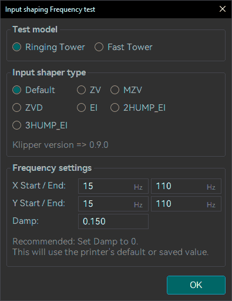
OrcaSlicer Frequency test; běžný počáteční rozsah podle wiki je 15–110 Hz. Druh shaperu a výsledek závisí na firmwaru. Input Shaping · OrcaSlicer Wiki.
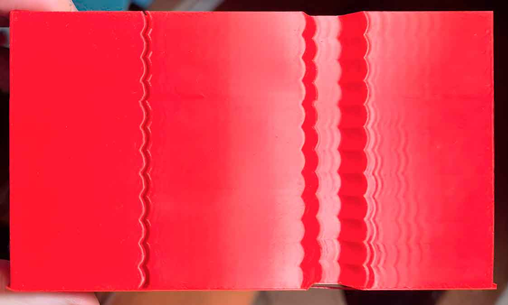
U os X i Y zvlášť změř výšku, kde zvolený frekvenční výsledek nejlépe omezuje opakované vlnky.
Kdy to má smysl
OrcaSlicer uvádí, že některé tiskárny mají akcelerometry, které měří rezonanční frekvence automaticky a přesněji. Pokud je Kobra X/firmware nabízí, tato měření jsou vhodnější než vizuální věž. Ruční kalibraci je užitečné zopakovat po zásadní mechanické změně, přemístění tiskárny, výměně řemenů, motorů/rámu nebo podložky, na které stojí.
Frekvenční věž a damping test
Pro lepší viditelnost zvol neprůhledný, lesklý filament. Lesklá plocha ukáže opakované vlnky lépe než matná.
Orca wiki ukazuje vysoké testovací hodnoty jako příklady, například 20 000 mm/s² a 200 mm/s, ale říká použít nejrychlejší akceleraci/rychlost/Jerk, které tiskárna zvládne bez ztráty kroků. Nekopíruj čísla 20 000/200 do Kobra X bez ověření limitu. Použij limity svého profilu a firmware.
Zvol Test Model (Testovací model) Ringing Tower (Doporučená věž) nebo Fast Tower (Rychlá věž; menší varianta vhodná při výrazném ringingu).
Vyber Input Shaper Type (Typ kompenzátoru) dostupný pro konkrétní firmware. Pro první odhad použij Frekvenční rozsah 15–110 Hz. Damping (Tlumení) 0,1–0,2 bývá výchozí; hodnota 0 může použít výchozí tlumení firmwaru, pokud ho firmware má. Test limituje hodnotami pohybu tiskárny i maximálním průtokem; wiki doporučuje pro tento test nepoužívat filament s limitem pod 10 mm³/s.
Vytiskni frekvenční test. Změř výšku zvlášť pro X a Y, použij Preview nebo firmware-specific čtení a odečti frekvence pro nejlepší výsledek.
Když výsledek není jasný, vyznač přijatelnou oblast (min/max) a zopakuj test v užším rozsahu. Potom nastav známou frekvenci pro X a Y a vytiskni Damping test; z něj odečti tlumení každé osy.
Výsledek se ukládá do firmware a/nebo printer profilu, nikoli jako obecná Flow Ratio. U Marlin/RepRap OrcaSlicer dokumentace popisuje cestu Printer settings (Nastavení tiskárny) → Motion ability (Pohybové vlastnosti) → Resonance Compensation (Kompenzace rezonance). U Klipperu uvádí nastavení start G-code nebo firmware příkazu SET_INPUT_SHAPER. Použij pouze cestu, kterou podporuje tvá tiskárna/Anycubic Slicer Next.
Ukázkové firmware příkazy z OrcaSlicer Wiki · pouze pro odpovídající firmware
Čísla jsou ukázková naměřená data z wiki. Nevkládej je do tiskárny bez vlastní kalibrace a potvrzené podpory firmwaru.
🔥
Po testu vrať testovací rychlosti a akcelerace na normální profil. Kalibrace může dočasně tisknout agresivně, aby vyvolala ringing. Nenechávej neověřené testovací limity aktivní pro běžné tisky.
Adaptive PA nepoužívá jednu hodnotu PA pro každý pohyb. Slicer vytvoří model, který vybírá PA podle volumetric flow (objemového průtoku) a acceleration (zrychlení). Wiki vysvětluje důvod: vhodné PA se obvykle snižuje při vyšší rychlosti/průtoku, větší výšce vrstvy a vyšším zrychlení. Jedna stálá hodnota proto bývá kompromisem mezi čistým vnějším rohem při pomalém pohybu a bezchybně navazujícími vnitřními stěnami při rychlejším pohybu.
💡
Jednoduše řečeno: běžné PA je jedno číslo pro celý tisk. Adaptive PA je malá tabulka čísel a slicer si z ní pro každé místo tisku vybere to, které odpovídá aktuální rychlosti a zrychlení. Tabulku si vyrobíš tak, že vytiskneš 12 malých testovacích vzorků, u každého vybereš nejlepší šipku a její číslo zapíšeš. Celý postup je níže krok za krokem.
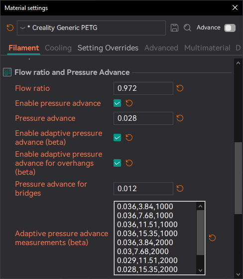
Nastavení vyžaduje tabulku naměřených trojic PA, Flow a Acceleration. Funkce musí být podporovaná firmwarem.
Kde to najdeš v Anycubic Slicer Next
Volby jsou v Filament settings (Nastavení filamentu) na kartě Filament, v části Flow ratio and Pressure Advance (Poměr průtoku a předstih tlaku). Pokud některá pole nevidíš, zapni vpravo nahoře v okně nastavení přepínač Advanced (Pokročilé). Pole Adaptive pressure advance measurements (Měření adaptivního PA) obsahuje ve výchozím stavu jen nuly; ty nahradíš svými naměřenými řádky.
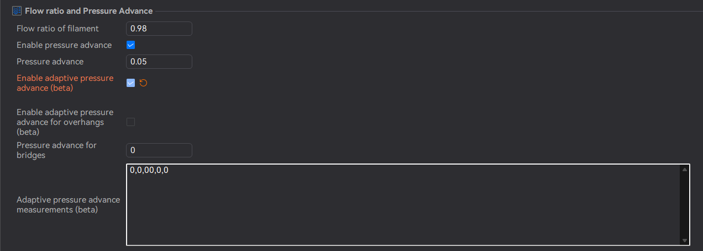
Anycubic Slicer Next, profil filamentu: Flow ratio and Pressure Advance. Adaptive PA je zaškrtnuté, pole měření má ještě výchozí nuly.
📖
Firmware Kobra X: OrcaSlicer Wiki funkci ověřila na tiskárnách s Klipperem; u Marlinu a Bambu ji vede jako neověřenou. Slicer se zapnutým adaptive PA zapisuje do G-kódu měnící se hodnoty PA. Zda je Kobra OS opravdu použije a nepřebije je vlastní dynamickou kalibrací průtoku, ukáže postup „Jak ověřit, že adaptive PA opravdu pracuje“ níže.
🔥
Orca CoreXY ukázkové hodnoty nejsou profil Kobra X. Wiki používá pro běžný CoreXY příklad zrychlení 1k/2k/4k a rychlosti 50/100/150/200 mm/s (12 kombinací). To je metoda, nikoliv bezpečný předpis pro jinou tiskárnu. Horní zrychlení musí být nanejvýš limit doporučený kalibrací Input Shaping pro nejpomalejší osu; jinak rohové mezery mohou být artefaktem input-shaperu, který by PA chybně „opravoval“.
Ideálně se sbírají data v několika rychlostech/průtocích i úrovních zrychlení. Dokumentace doporučuje nejméně tři body pro rozměr, který chceš modelovat. Pokud flow kalibrovat nechceš, můžeš nechat flow stejné a zadat jen sérii zrychlení; model pak ignoruje flow. Totéž platí pro zrychlení. Vždy ale zadávej celé trojice PA, Flow, Acceleration.
V každé zkoušce najdi PA, kde rohy nemají bouli, ale zároveň se v nich neoddělují stěny.
Vyšší průtok a zrychlení bývají užitečné pro čtení hranice: příliš malé PA viditelně vyboulí roh, příliš velké PA začne dělat mezery.
Pro jednotlivé PA zkoušky se v dokumentaci doporučuje malý krok 0,001, aby šlo rozpoznat rozdíly. Koncovou PA nastav dost vysoko, aby u nejnižšího průtoku začalo být vidět oddělování perimetrů. Pokud vzor nevejde na desku, uprav počáteční PA nebo krok tak, aby se tiskový vzor zmenšil, ale zachovej pokrytí hodnot, které skutečně potřebuješ.
Číselný příklad tabulky ze scénáře OrcaSlicer Wiki (CoreXY, není profil Kobra X)
Wiki ukazuje, jak se testovací kombinace rozprostřou do tabulky. Rychlost je mm/s, průtok mm³/s, zrychlení mm/s². Čísla níže pouze vysvětlují tvar dat:
Rychlost
Flow
Acceleration
Ukázkový PA
50
3,84
1000
0,036
100
7,68
1000
0,036
150
11,51
1000
0,036
200
15,35
1000
0,036
50 / 100 / 150 / 200
3,84 / 7,68 / 11,51 / 15,35
2000
0,036 / 0,030 / 0,029 / 0,028
50 / 100 / 150 / 200
3,84 / 7,68 / 11,51 / 15,35
4000
0,032 / 0,028 / 0,026 / 0,024
Každý výsledek se do profilu ukládá jako trojice PA, Flow, Acceleration. Protože příklad vychází z CoreXY a hodnot až 4000 mm/s², nepoužívej ho jako návod k nastavení Kobra X.
Stejný příklad jako text k vložení (jen pro vyzkoušení, jak pole vypadá vyplněné; pro tisk na Kobra X použij vlastní čísla):
Filament, pro který máš hotové testy 1 až 5 (teplota, průtok, běžné PA, retrakce, max. průtok). Adaptive PA na ně navazuje, nenahrazuje je.
Výsledek kapitoly II · Input Shaping: nejvyšší doporučené zrychlení tiskárny.
Čistou podložku, na kterou se vejde testovací vzorek, a čas na 12 krátkých tisků.
Dobré světlo z boku a lupu nebo telefon s fotoaparátem (rohy šipek se nejlépe posuzují na zvětšené fotce).
Pracovní tabulku níže (vytiskni si ji, nebo si čísla piš na papír).
Postup krok za krokem
Zapiš si výchozí stav. Otevři Filament settings (Nastavení filamentu) → Flow ratio and Pressure Advance a opiš si hodnotu Pressure advance (Předstih tlaku) z testu 3. Tato hodnota v profilu zůstane jako záloha (na snímku výše je to 0.05).
Urči tři zrychlení. Podívej se, jaké nejvyšší zrychlení doporučila kapitola II · Input Shaping. Nad tuto hodnotu netestuj. Vzor pro Kobra X (výrobce doporučuje 10000 mm/s²): 2000, 5000 a 10000 mm/s². Pokud Input Shaping doporučil méně, třeba 8000, zadej do generátoru níže 2000, 4000 a 8000 a klikni na Generovat; všechno ostatní se přepočítá samo.
Otevři kalibrační okno. V horní liště zvol Calibration (Kalibrace) → Pressure advance (Předstih tlaku). Otevře se okno PA Calibration.
Vyplň okno PA Calibration (viz obrázek níže): Extruder type (Typ extruderu): DDE (přímý posuv, Kobra X ho má). Method (Metoda): PA Pattern (Vzor). Start PA: 0 · End PA: 0.08 · PA step: 0.005. Tyto výchozí hodnoty pokryjí běžné PA a vzorek se vejde na podložku. Print numbers (Tisknout čísla): zaškrtnuto, jinak na vzorku nepřečteš hodnoty. Accelerations (Zrychlení) a Speeds (Rychlosti): zkopíruj z rámečků pod obrázkem (vytvoří je generátor). Potvrď tlačítkem OK.
Vytiskni všechny vzorky. Slicer vytvoří pro každou dvojici zrychlení × rychlost samostatnou desku (Plate), tedy 3 × 4 = 12 desek. Vyslicuj je (Slice all) a vytiskni jednu po druhé. Po každém tisku si vzorek hned označ (např. fixem číslo řádku z pracovní tabulky), ať se ti nepomíchají.
Přečti údaje na vzorku (viz obrázek vzorku níže). Vlevo jsou šipky, vpravo u každé šipky její hodnota PA. Dole jsou dvě čísla: horní je průtok (Flow) v mm³/s, spodní zrychlení v mm/s². Průtok zapiš do pracovní tabulky do sloupce „Flow ze vzorku“.
Vyber nejlepší šipku. Prohlédni špičku každé šipky (na fotkách níže): PA příliš nízké: roh je vyboulený a zakulacený, plast se v něm hromadí. Optimální PA: roh je ostrý, čáry jsou souvislé až do špičky, bez boule i bez mezery. PA příliš vysoké: v rohu nebo těsně před ním jsou mezery a díry, čáry se oddělují. Číslo vpravo u nejlepší šipky zapiš do sloupce „Nejlepší PA“.
Když nevíš, kterou vybrat. U pomalých vzorků (malý průtok a zrychlení) vypadá dobře víc šipek vedle sebe. Wiki radí: když mezi dvěma hodnotami nevidíš rozdíl, jsou dobré obě; vezmi hodnotu z rychlejšího vzorku se stejným zrychlením. Chceš-li přesnější číslo, zopakuj jen ten jeden vzorek s užším rozsahem (např. Start 0.03, End 0.05) a krokem 0.001, jak doporučuje wiki.
Zkontroluj zápis. Hotový zápis pod pracovní tabulkou se skládá sám. Zkontroluj, že v něm nezůstaly otazníky. Desetinná místa jsou s tečkou (0.046), čárka odděluje tři hodnoty v řádku. Klikni na Kopírovat.
Vlož zápis do profilu. Otevři Filament settings → Flow ratio and Pressure Advance. Klikni do pole Adaptive pressure advance measurements, smaž výchozí nuly (Ctrl+A, Delete) a vlož zkopírovaný zápis (Ctrl+V). Každá trojice musí být na samostatném řádku. Vyplň ostatní pole podle tabulky „Co vyplnit v profilu“ a profil ulož ikonou diskety (Save).
Ověř výsledek. Postupuj podle části „Jak ověřit, že adaptive PA opravdu pracuje“ níže.
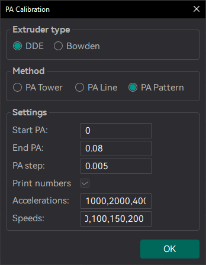
Okno PA Calibration: metoda PA Pattern, do polí Accelerations a Speeds se zadávají seznamy oddělené čárkou. Obrázek je z OrcaSlicer Wiki (hodnoty 1000,2000,4000 jsou příklad wiki, pro Kobra X použij rámečky níže). OrcaSlicer Wiki · Adaptive Pressure Advance.
Generátor hodnot testu
Zadej tři zrychlení (výsledek kapitoly II · Input Shaping, výchozí je vzor pro Kobra X) a rychlosti a klikni na Generovat. Rámečky Accelerations a Speeds níže, pracovní tabulka i hotový zápis se podle toho přepíší. Hodnoty i vyplněná tabulka se v tomto prohlížeči zapamatují.
Accelerations (Zrychlení) do okna PA Calibration:
2000,5000,10000
Speeds (Rychlosti) do okna PA Calibration:
50,100,150,200
Pokud tvoje verze Anycubic Slicer Next pole Accelerations a Speeds v okně nemá, vytiskni vzorky po jednom: před každým tiskem nastav v nastavení testu rychlost a zrychlení dané dvojice z pracovní tabulky (ve všech polích testu stejně).
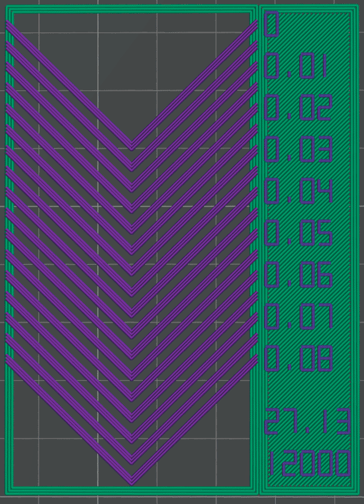
Vzorek PA Pattern: vlevo šipky, vpravo hodnota PA u každé šipky, dole průtok (zde 27.13 mm³/s) a zrychlení (zde 12000 mm/s²). Obrázek: OrcaSlicer Wiki.
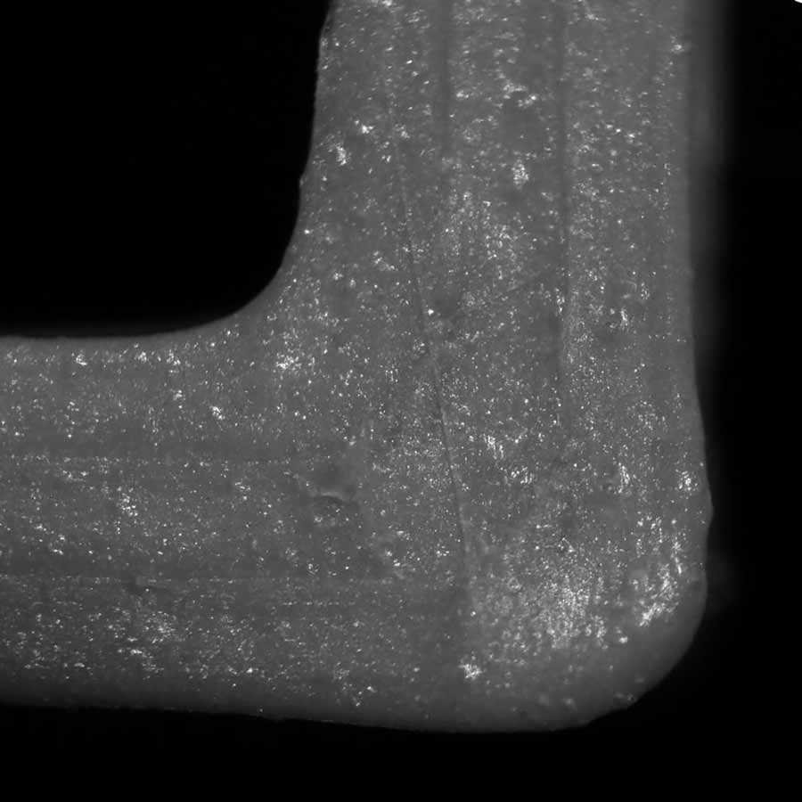
PA příliš nízké: roh je vyboulený a zakulacený. Obrázek: OrcaSlicer Wiki.
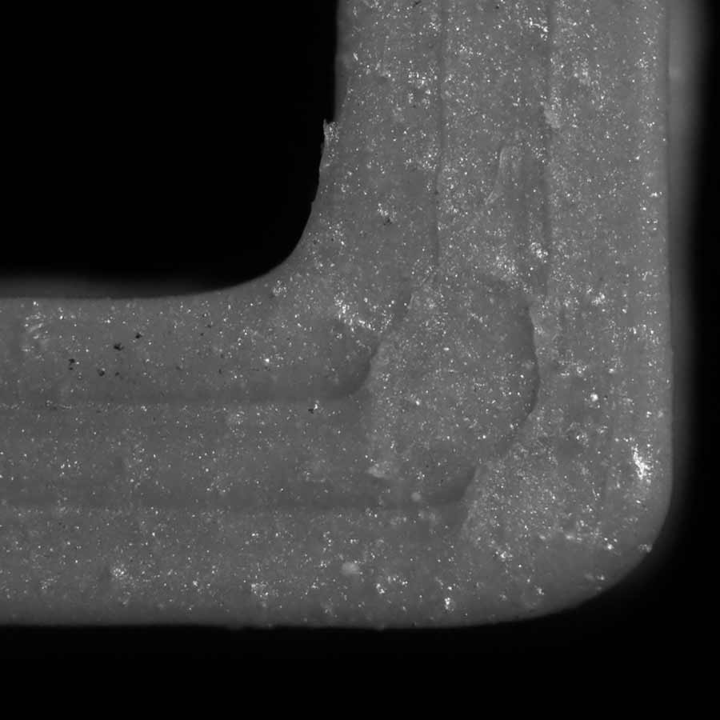
Optimální PA: ostrý roh bez boule a bez mezery. Obrázek: OrcaSlicer Wiki.
Do sloupců Flow ze vzorku a Nejlepší PA piš přímo sem (desetinnou čárku i tečku stránka převede na tečku). Poslední sloupec a hotový zápis níže se doplňují samy. Tlačítko Tisk vytiskne jen tuto tabulku, např. prázdnou k ruce u tiskárny.
#
Zrychlení (mm/s²)
Rychlost (mm/s)
Flow ze vzorku (mm³/s)
Nejlepší PA
Řádek do pole
1
2000
50
?.??? , ??.?? , 2000
2
2000
100
?.??? , ??.?? , 2000
3
2000
150
?.??? , ??.?? , 2000
4
2000
200
?.??? , ??.?? , 2000
5
5000
50
?.??? , ??.?? , 5000
6
5000
100
?.??? , ??.?? , 5000
7
5000
150
?.??? , ??.?? , 5000
8
5000
200
?.??? , ??.?? , 5000
9
10000
50
?.??? , ??.?? , 10000
10
10000
100
?.??? , ??.?? , 10000
11
10000
150
?.??? , ??.?? , 10000
12
10000
200
?.??? , ??.?? , 10000
Orientačně pro stopu 0,42 × 0,20 mm: 50 mm/s ≈ 4,2 · 100 mm/s ≈ 8,4 · 150 mm/s ≈ 12,6 · 200 mm/s ≈ 16,8 mm³/s. Do tabulky ale patří číslo vytištěné na vzorku.
Hotový zápis do profilu (zkopíruj)
Zápis se skládá sám z pracovní tabulky výše, řádek po řádku. Dokud nějaké políčko chybí, jsou na jeho místě otazníky; takový řádek do profilu nevkládej. Když je vše vyplněné, klikni na Kopírovat a vlož zápis do pole Adaptive pressure advance measurements.
Ukázka vyplněné sekce z OrcaSlicer Wiki (jiný filament a tiskárna, čísla nepřebírej). Oranžové popisky a šipka zpět ukazují hodnoty změněné proti původnímu profilu.
Jak ověřit, že adaptive PA opravdu pracuje
Kontrola G-kódu (slicer). Slicuj běžný model se zapnutým adaptive PA, ulož G-kód (Export G-code) a otevři ho v textovém editoru (např. Poznámkový blok). Vyhledej (Ctrl+F) PRESSURE_ADVANCE nebo M900. Se zapnutým adaptive PA najdeš mnoho příkazů s různými hodnotami, s vypnutým jen jednu hodnotu. Tím ověříš slicer, ne tiskárnu.
Porovnávací tisk (tiskárna). Vytiskni stejný model dvakrát: jednou s vypnutým a jednou se zapnutým adaptive PA, vše ostatní stejné (filament, proces, rychlosti). Vhodný je model s ostrými rohy a různými rychlostmi, např. XYZ Cube z testu 6 nebo General Print Calibration Test Benchy (MakerWorld), který má vyznačená místa pro kontrolu PA.
Porovnej a rozhodni. Sleduj rohy (boule × mezery), šev a napojení výplně na stěny. Je-li tisk se zapnutým adaptive PA lepší, nech ho zapnuté. Je-li stejný nebo horší, vypni ho; profil dál používá běžnou PA.
Dobře nastavený model má rohy bez výdutí (zůstane jen přirozené zaoblení dané pohybem tiskárny), čistý šev a plnou výplň bez děr a separace od obvodových stěn. Pokud mají všechny testy téměř stejné PA, adaptivní model nejspíš nepřinese užitek; při tisku jednou rychlostí, výškou vrstvy a akcelerací také není potřeba.
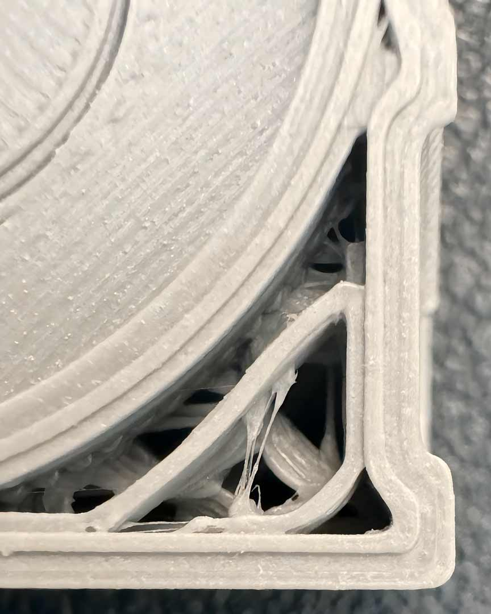
OrcaSlicer Wiki: správný výsledek má čisté rohy a šev bez výdutě či podextruze. Funkce nejvíce pomáhá vysokorychlostním sestavám s velkým rozsahem průtoků a zrychlení.
IV · Cornering (Průjezd rohů) · jen když řešíš rychlost a rohy
Cornering popisuje, jak tiskárna zvládá zatáčky a změny směru. Kalibrace hledá nejvyšší cornering/jerk limit, při kterém ještě nedochází ke zhoršení rohů a kvality. Jestli rohy vypadají dobře a rychlost ti stačí, můžeš test přeskočit. Není to nastavení filamentu.
Slicer se pokusí detekovat firmware a přizpůsobit test: Klipper používá Square Corner Velocity (SCV); Marlin 2 použije Junction Deviation (JD), pokud je Maximum Junction Deviation větší než 0, jinak Classic Jerk; legacy Marlin používá Classic Jerk; RepRap může použít Maximum instantaneous speed changes. Zkontroluj, co firmware skutečně podporuje.
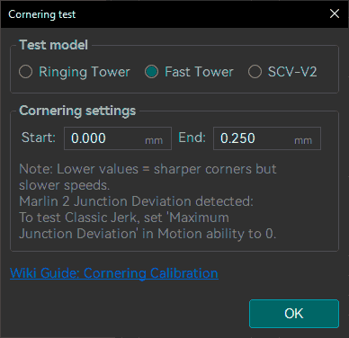
Začni širokým rozsahem jen v případě, že odpovídá schopnostem zařízení. Test je užitečný, když skutečně hledáš hranici kvality rohu. Cornering · OrcaSlicer Wiki.
Použij neprůhledný, lesklý filament pro lepší viditelnost ringing. Nastav rychlost a zrychlení, které chceš ověřit a které zařízení dovoluje. Wiki uvádí jako příklad 2000 mm/s² a 100 mm/s, ne však univerzální nastavení Kobra X.
V prvním testu zvol široký Start/End rozsah. Pokud se kvalita vůbec nezhorší, horní limit nebyl dosažen a můžeš End opatrně zvýšit. Pokud rohy ztrácejí ostrost, změř výšku tohoto místa a v slicerovém náhledu odečti odpovídající cornering/Jerk/JD hodnotu.
Vytiskni druhou věž s horní hodnotou poblíž místa, kde se kvalita začala horšit, abys hranici zpřesnil. OrcaSlicer doporučuje také Ringing Tower model pro snazší vizualizaci Jerk limitu.
Ulož hodnoty pouze do printer profilu: Printer settings (Nastavení tiskárny) → Motion ability (Pohybové vlastnosti) → Jerk limitation (Omezení Jerk). Použij X/Y Jerk nebo Junction Deviation podle firmware.
Příklady zápisu firmware z OrcaSlicer Wiki · nepřebírat bez ověření
Wiki uvádí jako příklady pro různé firmware například Klipper SCV 5,0; Marlin 2 s Junction Deviation 0,012 pomocí M205 J 0.012 a uložení M500; nebo Classic Jerk X/Y 10 pomocí M205 X 10 Y 10 a M500. Jsou to ukázkové hodnoty a příkazy pro konkrétní kompatibilní firmware, ne nastavení Kobra X.
Klipper: SET_VELOCITY_LIMIT SQUARE_CORNER_VELOCITY=5.0
Marlin JD: M205 J 0.012 → M500
Marlin Classic Jerk: M205 X 10 Y 10 → M500
Některé změny mají trvalejší uložení ve firmware/configu a mohou vyžadovat restart nebo úpravu a překompilování konfigurace. Pokud nerozumíš konkrétnímu firmware, hodnoty neměň příkazy.
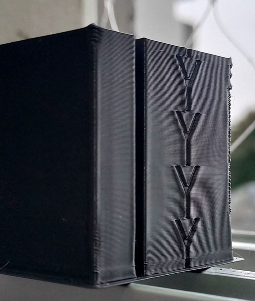
Změř patro, v němž roh začne ztrácet ostrost, a potom najdi odpovídající hodnotu v Preview.
📖
Jednotky nejsou stejné: JD se v příkladech pohybuje v mm (wiki uvádí 0–0,3 mm), Jerk v mm/s (často 1–20 mm/s nebo více) a SCV je vlastní firmware proměnná. Nepiš číslo z jedné metody do druhé. Pokud ukládáš změny přímo ve firmwaru, nejdřív si zjisti jeho postup a po testu vrať zkušební akceleraci/rychlost do běžných hodnot.
V · Handy Models
V Anycubic Slicer Next otevři nabídku pravým kliknutím na pracovní plochu → Add Handy models. Níže je přesně sedm modelů z nabídky. Šest modelů je v samostatných kartách; Autodesk FDM Test je na konci přes dvě šířky, protože spojuje více kontrolních prvků. Handy modely ber jako srovnávací pomůcky: při opakování zachovej stejný materiál, trysku, vrstvu a nastavení, jinak nemusí být rozdíl způsobený změnou, kterou právě ověřuješ.
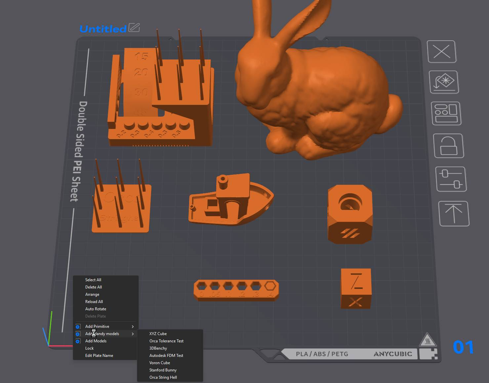
Všech sedm modelů z nabídky popsaných v této kapitole.
Šest samostatných Handy Models
XYZ Cube · rozměry os X/Y/Z
Co ověřuje: rozměry ve třech osách a základní pravidelnost stěn. Měř posuvným měřítkem uprostřed rovných ploch, ne přes zaoblené hrany. Každou osu změř opakovaně a výsledek zapiš; rozdíl X proti Y může ukázat na rozdílné chování os, podobná odchylka obou os má i jiné možné příčiny, například šířku stopy nebo smrštění materiálu.
Jak pokračovat: výpočet odchylky a doporučený postup jsou v kapitole 6 · XYZ Cube. Jedna kostka nestačí k úpravě steps/mm; nejprve ověř mechaniku a potvrď výsledek dalším tiskem.
Orca Tolerance Test · vůle a rozměrové mezery
Co ověřuje: jak malé vůle zůstanou po tisku průchozí nebo umožní uvolnit vložený díl. Zkoušej jemně, bez páčení, a zapiš nejmenší volnou hodnotu podle popisku modelu. Pokud nejde uvolnit žádná, je rozsah pro danou kombinaci těsný; pokud jsou volné všechny, test pouze říká, že jsou zkoušené mezery větší než potřebuješ.
Co ověřuje: vizuálně ukáže stěny, rohy, šev, horní plochu a zachování hran. Konkrétní rozsah záleží na variantě vložené do sliceru; řiď se popisky přímo na modelu, pokud je obsahuje.
Co ověřuje: vizuální plynulost zakřivených ploch, drobné rysy a přechody sklonu; uši a další malé části ukážou, zda tisk zachoval jemné detaily. Nemá stupnici ani jednoznačné skóre, proto jej používej jako stejný srovnávací model před a po změně.
Jak pokračovat: teplotu prověř přes 1 · Temperature, nitkování přes 4 · Retraction a pravidelné svislé pruhy přes 7 · VFA. Zajímej se o konkrétní vadu, ne jen o celkový dojem.
Orca String Hell · nitkování při přejezdech
Co ověřuje: vlákna a nánosy mezi opakovanými prvky při přejezdech. Rozliš jemné řídké nitky od kapek a hustých pavučin. Nahodilé zhoršování může souviset s vlhkostí nebo nestabilní extruzí; samotný test příčinu neurčí.
Jak pokračovat: nejdřív zkontroluj suchost filamentu a teplotu v doporučeném rozsahu, potom dolaď 4 · Retraction test. Teplotní věž je v 1 · Temperature. Měň jednu hodnotu najednou; přehnaná retrakce může způsobit podextruzi nebo ucpávání.
3DBenchy · souhrnná kontrola tisku
Co sleduje: můstek pod přídí, převisy trupu, kruhovitost komína, otvory, drobné nápisy, horní plochy a první vrstvu. Tiskni bez podpor, které by výsledek převisů změnily.
Tento model spojuje více zkoušek v jednom výtisku. Nehledej jedno celkové „prošel/neprošel“: každou označenou oblast posuď zvlášť, poznamenej konkrétní vadu a pak ji ověř cíleným testem. Geometrie a popisky se mohou podle varianty mírně lišit; při tisku se řiď popisky přímo na modelu a jeho náhledem.
Část testu
Co přesně sledovat
Jak výsledek číst a kam pokračovat
Rozměrové stupně v X a Y
Změř opakované stupně na rovných plochách a porovnej jejich průměrnou odchylku v obou osách.
Rozdíl X proti Y může ukazovat na vůli nebo rozdílné chování os; podobná odchylka obou směrů může mít i jiné příčiny včetně šířky stopy či smrštění. Ověř mechaniku a kapitolu 6 · XYZ Cube; neměň steps/mm podle jediného modelu.
Jemné pozitivní prvky a věžičky
Všímej si, které malé výstupky zůstaly oddělené a vytiskly se celistvě. Nitky mezi nimi zaznamenej zvlášť jako stringing.
Slité nebo chybějící prvky mohou souviset s rozlišením, šířkou stopy, teplotou či stabilitou extruze. Flow ověř přes 2a · Flow YOLO; nitky přes 1 · Temperature a 4 · Retraction.
Otvory a negativní prvky
Zkus označené otvory/prvky uvolnit bez nástroje a bez páčení. Poznamenej nejmenší volný rozměr a zda se výsledek liší podle osy.
Příliš těsné otvory nejsou automaticky chybný Flow Ratio. Porovnej s 8 · Orca Tolerance Test a podle potřeby ověř rozměry v XY. Kompenzaci měň až po opakovaném výsledku.
Převislé plochy
Porovnej označené úhly od mírného po strmý; hledej zvlněný spodní povrch, zvedání okraje a bod, kde se kvalita zhorší.
Výsledek ovlivňuje chlazení, teplota i rychlost. Zkontroluj chlazení pro materiál a teplotu přes 1 · Temperature; potom zopakuj samostatný převisový test se stejnou orientací.
Mosty
Porovnej průvěs vláken u různých rozpětí a přilnutí jejich začátku i konce. Zapiš, zda se zhoršuje střed, nebo kotvení.
Průvěs středu ukazuje na limit kombinace rychlosti mostu, teploty a chlazení; špatné kotvení může mít jinou příčinu. Ověř bridge speed a chlazení na cíleném testu, případně porovnej projekty VI · C/D.
Vlnění za hranami (ringing)
Pod bočním světlem sleduj opakované vlny za rohy a jak daleko od hrany pokračují. Zapiš, na které ose se objevují.
Pravidelné ozvěny po změně směru ověř postupem II · Input Shaping. Svislé pravidelné pruhy na stěně naopak prověř jako 7 · VFA.
Sloupky a zarovnání vrstev v Z
Prohlédni sloupek po obvodu. Rozliš běžnou stopu vrstev od opakovaného bočního posunu nebo periodických pásů.
Viditelný posun může souviset s mechanikou osy Z či vedením; pouhá změna textury sama neurčuje příčinu. Zkontroluj mechaniku a výsledek potvrď dalším tiskem, ne změnou flow.
Praktický postup: vyber jednu vadnou část, spusť uvedený cílený test a změň jednu relevantní hodnotu. Po úpravě rychlosti zopakuj kontrolu při nové rychlosti; ověř zejména teplotu, chlazení a limit objemového průtoku přes 5 · Max Volumetric Speed. FDM test pak použij jako souhrnné ověření, ne jako náhradu všech cílených testů.
Šest projektů dodaných ve složce Vzory. Jde o připravené desky a někdy také modifikátory z jiného sliceru. Po otevření vyber Kobra X, filament a proces, projdi každou desku a ověř nastavení i náhled G-code. Nepřebírej automaticky teploty, rychlosti ani průtokové limity z projektu.
Dodané projekty 3MF · označení písmeny
A · Advanced Top Surface test
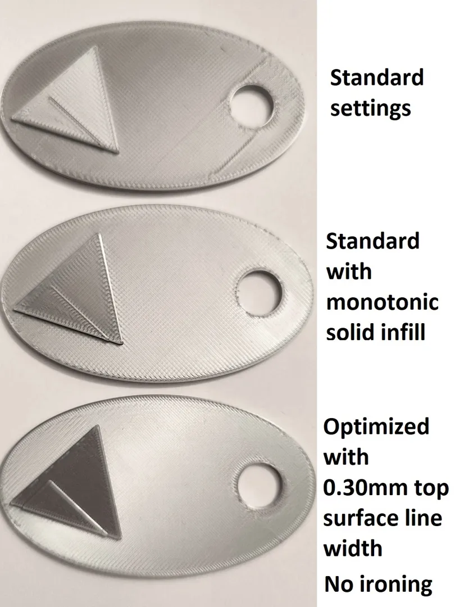
Náhled obsažený v projektu 3MF.
Vícedílný návod a test běžných vad horní plochy: přechodové čáry, mezery, flow, dynamika extruze, šířka stopy, chlazení i povrchové nastavení. Začni standardní deskou a postupuj podle instrukcí dalších desek; neřeš všechny vady změnou Flow Ratio. Projekt je z Bambu Studio a obsahuje specifická nastavení i nápovědné obrázky.
Projekt obsahuje kalibrační karty; ověř zvolenou desku a její popisky.
Název souboru slibuje rozsah Flow Ratio 0,80–1,10. Projektová metadata ale popisují sadu Calibration Cards zahrnující také horní povrch a ironing. Zkontroluj v Anycubic Slicer Next, co je na každé desce a jaké hodnoty jsou na vzorcích skutečně nastavené. Vyber nejrovnoměrnější hladký povrch bez mezer a výsledek ověř běžným tiskem.
C · PLA Temp Speed Tower 180–240
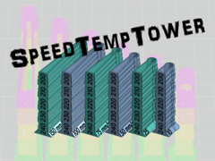
Rozsah v názvu projektu se týká připravené zkoušky PLA.
Věž kombinuje zkoušku teploty a rychlosti. Porovnej čitelné úseky podle popisků a ověř náhledem sliceru, jakou teplotu i rychlost skutečně používá každé patro. Rozsah 180–240 °C je pouze tento konkrétní test PLA; nepřebírej ho pro jiný filament ani mimo jeho doporučený rozsah.
D · Ironing Test
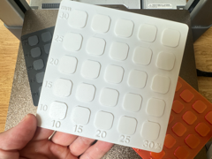
Vzorky porovnávají výsledek žehlení při různých nastaveních.
Testuje Ironing (žehlení horní plochy), zejména rychlost a průtok žehlení. Ponech běžný Flow Ratio ověřený předem; vyber políčko s rovnoměrným povrchem bez hrbolků, rýh a vynechaných míst. Nastavení žehlení se ukládá do procesu tisku, nikoli jako obecný průtok filamentu. Projektové výchozí hodnoty patří jiné sestavě.
E · Hinge Tolerance Test
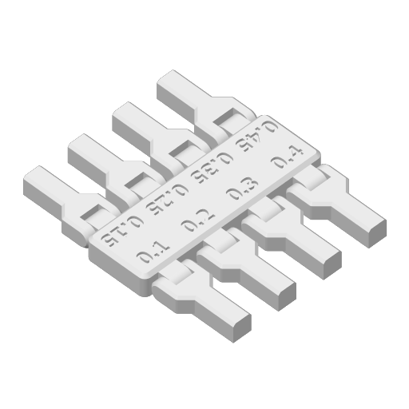
Více pantů porovnává různé konstrukční vůle.
Porovnává, při jaké vůli se pant po vytištění uvolní a pohybuje bez násilí. Zapiš nejmenší volně pohyblivou vůli. Výsledek je praktický pro návrh podobných print-in-place pantů a závisí na materiálu i procesu; nepřepisuje se do filamentového profilu.
Porovnává Top Z Distance (horní Z mezeru) u stromových i běžných podpor. Zkoušené hodnoty v původním modelu jsou 0,20 / 0,25 / 0,255 / 0,275 / 0,30 mm. Hledej rovnováhu: podpora jde odstranit, ale spodní plocha převisu není příliš poškozená. Hodnota patří Support (Podpěry) v procesu; přizpůsob ji výšce vrstvy a konkrétnímu materiálu.
U každého staženého 3MF: po otevření zvol Kobra X, trysku, materiál a proces; projdi jednotlivé desky, modifikátory a nastavení objektů. Slicuj a prohlédni Preview (Náhled) před tiskem. Výchozí profily, rychlosti, teploty ani limity z projektu Bambu/Orca nejsou automaticky ověřené pro Kobra X.
VII · Když se něco nedaří: hledání příčiny
Jedna viditelná vada může mít několik příčin. Nedělej náhodně tři změny najednou. Vyber malý test, který příčinu rozliší, a zapiš, co se změnilo.
Příznak
Začni tímto ověřením
Teprve potom zvaž
Mezery v horní ploše, slabé vrstvy
Zkontroluj, že je tryska čistá, profil vybraný správně a filament suchý. Podívej se na vrstvu/první vrstvu.
#2 Flow Ratio; pokud se to děje jen při vysoké rychlosti, #5 Max flow.
Hrboly/hřebeny na top surface (horní ploše)
Porovnej vzorky Flow YOLO; ověř, že povrch není jen seam (šev) nebo nerovná podložka.
Sniž modifier o malý krok, ulož a přetiskni. Neopravuj to bez ověření teplotou.
Roh má výduť nebo za ním zeje mezera
Teplota a Flow Ratio už musí být rozumné; zkontroluj rychlost a první vrstvu.
#3 Pressure Advance; PA Line, Tower nebo Pattern podle toho, který výsledek jde čistě číst.
Nitky a pavučiny
Vysuš filament; očisti trysku; ověř teplotu v rámci výrobce. Zkus několik přejezdů na čistém kusu.
#4 Retraction test. Zvyšuj délku po malých krocích, ne bez limitu.
Silné nitky i na vršku věže
Suchost filamentu a správně usazená/netěsná tryska.
Teprve poté zvaž další retrakci; extrémní zatažení může přinést další problémy.
Povrch se zhorší ve vysokých vrstvách Max-flow testu
Odečti výšku poslední čisté vrstvy, zkontroluj teplotu a MVS.
#5 limit s rezervou 10–20 %, případně znovu otestuj horní oblast.
Rozměr otvoru se liší od vnějšího obrysu
Změř oba zvlášť stejným měřidlem a vytiskni tolerance test.
Hole compensation pro otvor, contour compensation pro obrys – ne současně.
Pravidelné vlnky po rohu
Ověř mechanické vůle, řemeny, kladky a rychlosti profilu.
VFA, Input Shaping či Cornering, pokud je firmware podporuje.
Filament se nelepí na podložku
Čistá podložka, správná první vrstva/Z offset, teplota podložky, materiál. Vady přilnavosti matou PA Line.
Nekalibruj Flow/PA na testu, který nedrží na podložce rovnoměrně.
Bezpečný návrat po neúspěšném pokusu
Poznamenej novou hodnotu a zapiš, co se zhoršilo.
Vrať pouze poslední změněné nastavení na dřívější hodnotu.
Ulož profil a znovu slicuj stejný kontrolní model.
Pokud se kvalita vrátí, víš, že příčina souvisela s poslední úpravou. Pokud ne, hledej ve filamentu, první vrstvě, trysce nebo mechanice.
VIII · Oficiální dokumentace, videa a další zdroje
Dokumentace OrcaSlicer je primární zdroj pro kalibrační postupy, rozsahy a způsob čtení testů. Rozhraní Anycubic Slicer Next se může podle verze lišit; názvy testů v nabídce proto porovnávej se svým programem.
Deset článků OrcaSlicer Wiki použitých v tomto návodu
Nejdůležitější věta na konec: změň jednu hodnotu, ulož profil, znovu slicuj běžný model a porovnej stejný problém. To je spolehlivější než přepisovat mnoho hodnot podle jednoho cizího tisku.
Průvodce kalibrací · Anycubic Slicer Next · Anycubic Kobra X Číslované kapitoly odpovídají testům v tištěném Checklistu. Římské kapitoly jsou doplňkové/pokročilé. Obrázky v pic/ pocházejí z OrcaSlicer Wiki; odkazy na zdroje jsou uvedené u obrázků a v seznamu literatury. Před použitím zkontroluj, že nastavení odpovídá přesně tvé verzi sliceru, tiskárně, trysce a firmwaru.